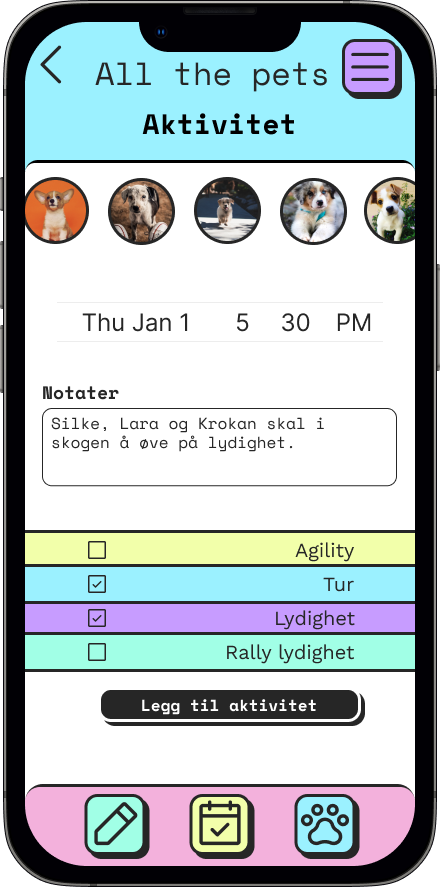
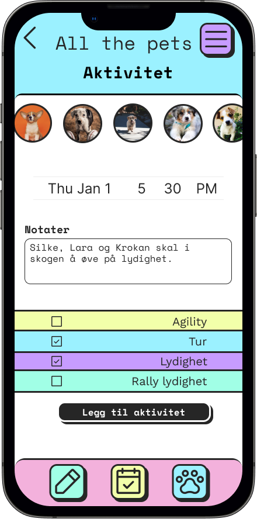

All the pets
Har du en tendens til å glemme å bestille tannrens til hunden din? vaksine til katten? Husker du aldri å klippe klør som gror som ugress? Da er All the pets løsningen!
 


All the pets er et verktøy som vil hjelpe deg med å holde styr på det meste når det gjelder dyreholdet ditt
Uansett om du har 6 eller 1 kjæledyr så er det lurt/viktig? å ha styr på all den informasjonen man trenger å ha rundt dem, om det gjelder sykdom, vaksiner og kanskje du vil dokumentere små eventyr du har sammen med kjæledyret ditt?

Denne appen vil hjelpe deg til å holde styr på alle de små tingene som er viktige å få gjort til tida, minne deg på når neste vaksine må tas, kunne holde styr på alle lister du trenger for å kunne huske alt du trenger å gjøre.
Denne appen vil hjelpe deg til å holde styr på alle de små tingene som er viktige å få gjort til tida, minne deg på når neste vaksine må tas, kunne holde styr på alle lister du trenger for å kunne huske alt du trenger å gjøre.
Denne appen vil hjelpe deg til å holde styr på alle de små tingene som er viktige å få gjort til tida, minne deg på når neste vaksine må tas, kunne holde styr på alle lister du trenger for å kunne huske alt du trenger å gjøre.


Denne appen vil hjelpe deg til å holde styr på alle de små tingene som er viktige å få gjort til tida, minne deg på når neste vaksine må tas, kunne holde styr på alle lister du trenger for å kunne huske alt du trenger å gjøre.